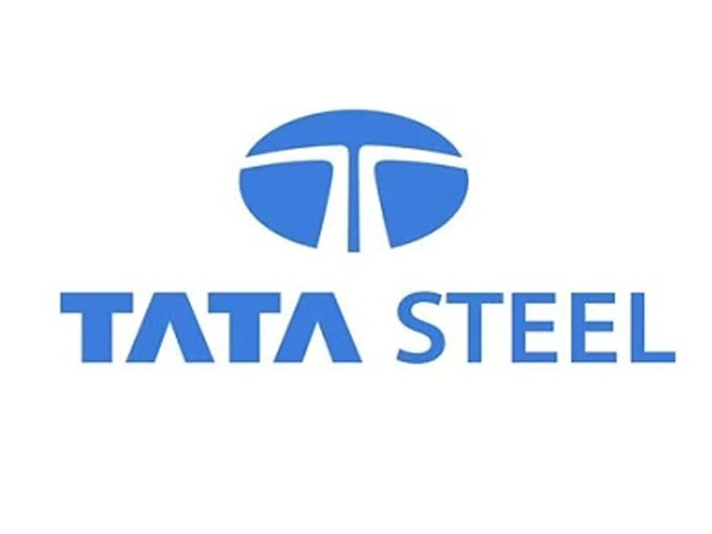

The narrative of industrial evolution has traditionally followed a linear trajectory—methodical progression through sequential technological revolutions, each built upon the foundations of its predecessor. Yet across India's diverse manufacturing landscape, a remarkable phenomenon unfolds: enterprises are transcending this conventional pathway to embrace the technologies of Industry 4.0 with extraordinary vigour and vision. Rather than progressing incrementally through historical industrial stages, India's manufacturers are executing a strategic leapfrog manoeuvre—advancing directly to advanced manufacturing paradigms that integrate cyber-physical systems, artificial intelligence, and interconnected value chains.
This manufacturing renaissance represents not merely technological adoption but a fundamental reimagining of industrial possibility within the Indian context. It emerges at the confluence of several distinctive forces: the national imperative for self-reliance articulated through initiatives like "Make in India" and "Atmanirbhar Bharat"; the demographic advantage of a youthful, technically skilled workforce; the institutional knowledge accumulated through decades of manufacturing experience; and the technological infrastructure that enables integrated digital-physical systems.
The implications extend beyond economic metrics to encompass sustainability, global competitiveness, and social transformation. As India positions itself to become a manufacturing powerhouse of the 21st century, the strategic implementation of Industry 4.0 capabilities serves not merely as technological enabler but as fundamental catalyst for manufacturing renaissance.
The Distinctive Context of India's Manufacturing Evolution
India's embrace of Industry 4.0 occurs within a distinctive industrial context that shapes both implementation approaches and outcomes. Several characteristics distinguish India's manufacturing evolution from patterns observed elsewhere:
Asymmetric Industrial Development
Unlike manufacturing powers that evolved through sequential industrial revolutions, India's manufacturing landscape exhibits remarkable asymmetry—encompassing enterprises ranging from traditional craft production to sophisticated Industry 3.0 automation. This asymmetry enables distinctive leapfrogging strategies, with enterprises at various developmental stages adopting Industry 4.0 technologies selectively based on their specific contexts and capabilities.
Dual Imperatives of Productivity and Inclusion
India's manufacturing strategy balances the seemingly contradictory imperatives of enhanced productivity through automation and expanded employment through industrial growth. This distinctive balancing act has fostered innovative approaches to Industry 4.0 implementation—deploying advanced technologies to enhance productivity while maintaining or expanding employment through increased production volumes and new capabilities.
Frugal Innovation Heritage
India's tradition of frugal innovation—creating sophisticated solutions under resource constraints—has fostered distinctive approaches to Industry 4.0 implementation. Rather than replicating Western or East Asian technology deployment models, Indian manufacturers have pioneered cost-effective, contextually appropriate applications of advanced manufacturing technologies. This "frugal Industry 4.0" approach represents a significant innovation in itself, potentially applicable across emerging economies.
Integration of Traditional Knowledge with Advanced Technology
Unlike manufacturing contexts where traditional knowledge has been largely supplanted by industrial processes, Indian manufacturers frequently integrate traditional expertise with advanced technology. This integration—whether in textiles, metallurgy, or food processing—creates unique capabilities combining the precision and scalability of Industry 4.0 with the sophistication of traditional knowledge systems.
These distinctive characteristics have fostered implementation approaches that differ significantly from Industry 4.0 adoption patterns in Europe, North America, or East Asia. The case studies that follow illuminate these distinctive patterns—revealing how Indian manufacturers have adapted Industry 4.0 concepts to their specific contexts while achieving transformative outcomes.
Case Study: Tata Steel's Digital Transformation
The metamorphosis of Tata Steel from traditional integrated steel manufacturer to pioneer of intelligent manufacturing exemplifies the transformative potential of contextually appropriate Industry 4.0 implementation. With operations spanning multiple facilities across India, Tata Steel confronted challenges familiar to many Indian industrial enterprises: heterogeneous manufacturing assets of varying vintage, complex workforce dynamics spanning multiple skill levels, and intense margin pressure in globally competitive markets.
Rather than implementing a comprehensive Industry 4.0 transformation across all operations simultaneously, Tata Steel adopted a strategic approach focusing on high-impact opportunities within their existing operational context. Their transformation journey encompasses several dimensions:
Predictive Asset Management
Tata Steel deployed over 25,000 connected sensors across critical equipment at their Jamshedpur and Kalinganagar plants, establishing continuous monitoring capabilities integrated with machine learning algorithms for predictive maintenance. This system achieved 70% accuracy in predicting equipment failures 15-20 days in advance—enabling predictive rather than reactive maintenance scheduling. The impact has been substantial: unplanned downtime reduced by 42%, maintenance costs reduced by approximately £18 million annually, and asset lifespan extended by 20-30% for critical equipment.
Digital Twin Implementation
For critical production processes, Tata Steel developed sophisticated digital twins integrating physics-based models with real-time operational data. These digital twins enable operators to simulate process adjustments before implementation, optimising parameters for energy efficiency, quality, and throughput. At the company's Cold Rolling Mill, this capability has improved yield by 2%, reduced quality deviations by 35%, and decreased energy consumption by 9%—driving both economic and environmental benefits.
Integrated Supply Chain Optimisation
Tata Steel implemented an AI-enabled supply chain optimisation system spanning raw material procurement through finished product delivery. This system integrates demand forecasting, inventory optimisation, logistics planning, and distribution scheduling—creating a responsive supply chain capable of adapting to market fluctuations. The impact includes inventory reduction of £45 million, logistics cost reduction of 7%, and on-time delivery improvement from 82% to 94%.
Augmented Workforce Capabilities
Recognising that Industry 4.0 effectiveness depends on workforce capabilities, Tata Steel implemented augmented reality systems for operator guidance and remote expert assistance. These systems provide contextual information and guidance to operators while enabling remote experts to assist with complex maintenance and operational challenges. The result has been a 47% reduction in mean time to repair, 32% improvement in first-time-right maintenance, and enhanced knowledge transfer across generations of workers.
The Tata Steel case illustrates several principles central to successful Industry 4.0 implementation in the Indian context: selective application focused on high-impact opportunities rather than comprehensive transformation; pragmatic integration with existing operational systems rather than wholesale replacement; capability augmentation focused on enhancing rather than replacing human expertise; and measured implementation pacing aligned with organisational absorption capacity.
The outcomes have been transformative: over three years, overall equipment effectiveness improved from 72% to 85%, manufacturing costs reduced by 11%, quality deviations decreased by 38%, and sustainability metrics improved significantly across energy, water, and material utilisation dimensions. These results have been achieved while maintaining workforce stability—demonstrating that Industry 4.0 implementation can enhance rather than diminish employment when thoughtfully executed.
Case Study: Mahindra & Mahindra's Smart Factory Initiative
Mahindra & Mahindra, one of India's largest automotive manufacturers, has navigated the transition to Industry 4.0 through a comprehensive smart factory initiative that balances technological sophistication with pragmatic implementation. Their approach illuminates distinctive patterns of Industry 4.0 adoption in India's automotive sector, which must balance intensifying global competition with specific regional manufacturing contexts.
Mahindra's smart factory journey began not with technology selection but with challenge identification—systematically mapping operational pain points including production variability, quality inconsistency, asset reliability, and energy inefficiency. This problem-centric approach led to targeted initiatives across multiple dimensions:
Internet of Things (IoT) Enabled Production
Mahindra implemented a comprehensive IoT infrastructure at their Chakan plant near Pune, connecting over 1,000 critical manufacturing assets to a central monitoring and analytics platform. This system provides real-time visibility into equipment status, production parameters, and quality metrics—enabling proactive intervention before deviations impact production. The impact has been dramatic: cycle time variations reduced by 43%, first-time-right production increased from 84% to 96%, and overall equipment effectiveness improved from 67% to 83%.
AI-Enabled Quality Assurance
Recognising that quality control represented a significant operational challenge, Mahindra implemented an AI-based visual inspection system for critical components and assemblies. This system examines 100% of production rather than the previous statistical sampling approach, identifying subtle defects with greater consistency than human inspection. The system has reduced defect escape rates by 87%, customer-reported quality issues by 52%, and quality control costs by 34%—simultaneously improving quality and efficiency.
Digital Manufacturing Execution
Mahindra implemented a sophisticated Manufacturing Execution System (MES) integrating production planning, execution, and monitoring across their value chain. This system enables real-time production tracking, dynamic scheduling, and automated work instructions delivered to operators through digital interfaces. The impact includes production plan adherence improvement from 76% to 94%, work-in-process inventory reduction of 38%, and manufacturing lead time reduction of 27%.
Energy Intelligence System
Addressing the dual imperatives of cost reduction and environmental sustainability, Mahindra implemented an energy intelligence system monitoring consumption patterns across production systems. This system identifies efficiency opportunities, optimises energy-intensive processes, and enables intelligent load management. The results include energy cost reduction of 17%, peak demand reduction of 21%, and carbon footprint reduction of approximately 25,000 tonnes annually.
What distinguishes Mahindra's approach is its deliberate integration of Industry 4.0 technologies with their existing production systems and workforce capabilities. Rather than implementing technology for its own sake, each initiative addressed specific operational challenges while building upon existing manufacturing knowledge. The transformation progressed through measured phases, with each stage delivering concrete operational improvements while building capabilities for subsequent advancement.
Mahindra's experience demonstrates that successful Industry 4.0 implementation in the Indian context often follows a challenge-centric rather than technology-centric approach—identifying specific operational pain points, selecting appropriate technological solutions, and implementing them in ways that complement rather than disrupt existing manufacturing knowledge. The result has been manufacturing transformation that enhances global competitiveness while maintaining workforce stability and improving sustainability metrics.
Case Study: Aditya Birla Group's Hindalco Digital Transformation
Hindalco Industries, the aluminium manufacturing flagship of the Aditya Birla Group, presents a compelling case study in Industry 4.0 implementation within process manufacturing—a sector that presents distinct challenges and opportunities for digital transformation. With operations spanning bauxite mining, alumina refining, aluminium smelting, and downstream processing, Hindalco confronted the complexity of integrating digital capabilities across diverse processes and remote operational locations.
Their approach exemplifies strategic pragmatism in Industry 4.0 implementation, focusing on high-impact opportunities while building foundational capabilities for comprehensive transformation:
Integrated Operations Centre
Hindalco established a centralised Integrated Operations Centre (IOC) at their Renukoot complex, consolidating operational monitoring and control across previously siloed processes. This centre integrates data from process control systems, quality management systems, maintenance systems, and energy management systems—creating comprehensive visibility across the aluminium value chain. The IOC has enabled cross-functional optimisation previously impossible with siloed operational visibility, driving throughput improvement of 8%, energy efficiency improvement of 11%, and quality consistency improvement of 17%.
Advanced Process Control
For critical production processes including digestion, precipitation, calcination, and smelting, Hindalco implemented advanced process control systems integrating physics-based models with machine learning capabilities. These systems continuously optimise process parameters to maximise yield, minimise energy consumption, and ensure quality consistency. The impact includes alumina yield improvement of 3%, smelter energy consumption reduction of 4%, and quality variability reduction of 28%—delivering both economic and environmental benefits.
Predictive Quality Management
Hindalco developed an AI-enabled predictive quality management system integrating data from raw material characteristics, process parameters, and in-process testing to predict finished product quality with 94% accuracy. This system enables proactive intervention before quality deviations manifest in finished products, reducing costly rework and customer complaints. The impact includes first-time-right production improvement from 86% to 97%, customer complaint reduction of 51%, and quality-related cost reduction of approximately £12 million annually.
Digital Supply Chain Management
Recognising that operational excellence requires integrated supply chain visibility, Hindalco implemented a digital supply chain management system spanning raw material procurement through finished goods delivery. This system optimises inventory levels, logistics operations, and customer fulfilment based on integrated demand forecasting and production planning. The impact includes working capital reduction of £34 million through optimised inventory, logistics cost reduction of 8% through improved planning, and on-time-in-full delivery improvement from 78% to 93%.
What distinguishes Hindalco's approach is its deliberate phasing of digital transformation initiatives, with each phase building capabilities for subsequent advancement while delivering concrete operational improvements. Their experience demonstrates that Industry 4.0 implementation in process manufacturing benefits from centralised integration of operational data previously trapped in functional silos—creating visibility and optimisation opportunities that transcend traditional operational boundaries.
The outcomes have been transformative: overall operational costs reduced by 14%, energy efficiency improved by 17%, quality consistency enhanced significantly, and environmental metrics improved across water consumption, energy utilisation, and waste generation dimensions. These results have been achieved while enhancing workforce capabilities through digital skill development and creating new roles in data analytics, process optimisation, and digital operations—demonstrating that Industry 4.0 implementation can enhance workforce capabilities when thoughtfully executed.
Case Study: ITC Limited's Smart Manufacturing Initiative
ITC Limited, one of India's most diversified conglomerates with significant manufacturing operations across sectors including foods, personal care, packaging, and agribusiness, presents a distinctive case study in multi-sector Industry 4.0 implementation. Their approach illuminates strategies for digital transformation across diverse manufacturing contexts operating under a unified corporate umbrella.
ITC's smart manufacturing initiative exemplifies a capability-centric approach to Industry 4.0—building foundational digital capabilities that can be adapted to diverse manufacturing contexts while delivering concrete operational improvements:
Factory Visibility System
Across manufacturing facilities in multiple sectors, ITC implemented a comprehensive Factory Visibility System providing real-time monitoring of production performance, quality parameters, asset status, and workforce productivity. This system establishes a "single source of truth" for operational performance, enabling data-driven decision making and continuous improvement. The impact includes Overall Equipment Effectiveness improvement from 65% to 79% across facilities, productivity improvement of 22%, and manufacturing cost reduction of 9%.
Quality 4.0 Implementation
Recognising that quality assurance represents a critical concern across their diverse product portfolio, ITC implemented a Quality 4.0 system integrating in-line sensing, computer vision inspection, predictive analytics, and digital traceability. This system ensures consistent product quality while reducing dependence on manual inspection and testing. The impact includes defect reduction of 61%, quality assurance cost reduction of 26%, and quality-related customer complaints reduction of 74%.
Digital Worker
To enhance workforce productivity and capabilities, ITC implemented a Digital Worker programme providing operators with context-specific information, guidance, and decision support through mobile devices and augmented reality interfaces. This system transforms standard operating procedures from static documents to interactive guidance, enhances troubleshooting capabilities through remote expert assistance, and enables digital skill assessment and development. The impact includes new product changeover time reduction of 42%, mean time to repair reduction of 37%, and operator productivity improvement of 28%.
Integrated Business Planning
ITC implemented an AI-enabled Integrated Business Planning system connecting demand forecasting, production planning, inventory management, and distribution scheduling across their value chain. This system optimises manufacturing operations based on market demand patterns, supply constraints, and financial objectives. The impact includes forecast accuracy improvement from 67% to 88%, finished goods inventory reduction of 23% while maintaining service levels, and supply chain cost reduction of 11%.
What distinguishes ITC's approach is its deliberate development of core digital capabilities that can be adapted to diverse manufacturing contexts—from food processing to personal care to packaging production. Their experience demonstrates that Industry 4.0 implementation across diverse manufacturing operations benefits from centralised capability development combined with context-specific application—enabling scale economies in technology development while maintaining operational relevance across manufacturing contexts.
The outcomes have been transformative: manufacturing costs reduced by 9-17% across facilities, quality metrics improved significantly, productivity enhanced by 12-28%, and sustainability metrics improved across energy, water, and waste dimensions. These results have been achieved while enhancing workforce capabilities through digital upskilling—demonstrating that Industry 4.0 implementation can create a more capable manufacturing workforce when thoughtfully executed.
Patterns of Successful Industry 4.0 Implementation in India
The case studies examined reveal several distinctive patterns characterising successful Industry 4.0 implementation in India's manufacturing sector—patterns that differ in important respects from implementation approaches observed in other industrial contexts:
Challenge-Centric Rather Than Technology-Centric Approach
Successful implementations begin not with technology selection but with systematic identification of specific operational challenges and improvement opportunities. This challenge-centric approach ensures that technology deployment addresses concrete operational needs rather than constituting technology adoption for its own sake. It enables selective application of Industry 4.0 capabilities to high-impact opportunities, delivering tangible operational improvements while building capabilities for broader transformation.
Integration Rather Than Replacement Philosophy
Rather than replacing existing manufacturing systems and knowledge with entirely new digital infrastructure, successful implementations thoughtfully integrate Industry 4.0 capabilities with existing operational systems and workforce expertise. This integration philosophy leverages accumulated manufacturing knowledge while enhancing it with digital capabilities—creating solutions that combine the precision and scalability of advanced technology with contextual knowledge developed through operational experience.
Workforce Augmentation Focus
Successful implementations focus on augmenting rather than replacing human capabilities through digital technologies. This augmentation focus enhances workforce productivity and capabilities while maintaining employment stability—addressing the dual imperatives of productivity improvement and employment generation that characterise India's industrial development objectives. It creates a more capable manufacturing workforce while mitigating concerns about technology-driven displacement.
Measured Implementation Pacing
Rather than attempting comprehensive transformation in a single initiative, successful implementations proceed through measured phases—with each phase delivering concrete operational improvements while building capabilities for subsequent advancement. This measured pacing aligns implementation with organisational absorption capacity, enables learning and adjustment through implementation experience, and delivers incremental value rather than requiring extended transformation before benefits materialise.
Frugal Implementation Approach
Successful implementations frequently employ what might be termed "frugal Industry 4.0"—achieving sophisticated capabilities through cost-effective approaches rather than capital-intensive technology deployment. This frugal approach enables manufacturers with limited investment capacity to access advanced manufacturing capabilities, democratising Industry 4.0 benefits beyond large, well-capitalised enterprises. It represents a significant innovation in implementation approach potentially applicable across emerging economies.
Sustainability Integration
Increasingly, successful implementations integrate sustainability objectives alongside traditional operational metrics—enhancing energy efficiency, water conservation, material utilisation, and waste reduction through digital capabilities. This sustainability integration addresses the growing imperative for environmentally responsible manufacturing while delivering operational cost benefits through resource efficiency. It positions Indian manufacturers advantageously as global markets increasingly demand environmentally responsible production.
These distinctive implementation patterns suggest that India is not merely adopting Industry 4.0 technologies but adapting them to its specific manufacturing context—creating implementation approaches potentially more relevant to emerging economy contexts than models developed in highly industrialised economies. This adaptive innovation may ultimately prove as significant as the technological implementation itself, potentially establishing India as a source of implementation knowledge for other emerging manufacturing economies.
Strategic Implications for India's Manufacturing Future
The strategic implications of India's Industry 4.0 implementation extend beyond individual enterprise performance to encompass national manufacturing competitiveness, sustainability objectives, and social development goals:
Global Competitiveness Enhancement
The productivity, quality, and responsiveness improvements enabled by effective Industry 4.0 implementation directly enhance India's global manufacturing competitiveness—positioning Indian manufacturers to compete effectively in international markets despite lower labour costs in some competing economies. This competitiveness enhancement supports national objectives for export growth and trade balance improvement while reducing dependence on imported manufactured goods.
Quality Reputation Transformation
Historically, Indian manufacturing has sometimes struggled with quality perception in global markets despite significant quality improvements in recent decades. The enhanced quality consistency, traceability, and verification enabled by Industry 4.0 technologies directly addresses this challenge—potentially transforming global perception of Indian manufacturing quality. This reputation transformation enables Indian manufacturers to compete in premium market segments previously dominated by manufacturers from other regions.
Sustainability Leadership Opportunity
The integration of sustainability objectives in Industry 4.0 implementation positions Indian manufacturers to establish leadership in environmentally responsible production at globally competitive costs. This capability addresses the growing demand for environmentally sustainable products while potentially creating competitive advantage as markets increasingly value sustainable production. It positions Indian manufacturing advantageously as global climate initiatives intensify and consumers increasingly consider environmental impact in purchasing decisions.
Industrial Development Model Innovation
Perhaps most significantly, India's distinctive approaches to Industry 4.0 implementation potentially establish an alternative industrial development model—demonstrating how emerging economies can leverage advanced manufacturing technologies to enhance competitiveness while supporting broader social development objectives. This model innovation could influence industrial development approaches across emerging economies seeking to enhance manufacturing capabilities while addressing employment and sustainability imperatives.
These strategic implications suggest that successful Industry 4.0 implementation represents not merely operational improvement but fundamental repositioning of India's manufacturing sector in the global industrial landscape. The patterns established now may shape India's manufacturing trajectory for decades to come, with implications extending far beyond individual enterprise performance to encompass national economic development and global competitiveness.
The Path Forward: Accelerating India's Manufacturing Renaissance
While the case studies examined demonstrate significant progress in Industry 4.0 implementation, broader acceleration of India's manufacturing renaissance requires systematic attention to several critical enablers:
Digital Infrastructure Development
Robust, reliable digital infrastructure—including high-speed connectivity, cloud computing resources, and edge computing capabilities—represents a foundational requirement for comprehensive Industry 4.0 implementation. Accelerating this infrastructure development, particularly in traditional manufacturing clusters and emerging industrial corridors, will enable broader Industry 4.0 adoption across the manufacturing sector.
Workforce Capability Enhancement
The effectiveness of Industry 4.0 implementation depends significantly on workforce capabilities spanning digital literacy, data analysis, process optimisation, and technology integration. Systematic workforce development initiatives—encompassing technical education reform, industry-aligned skill development programmes, and continuous learning systems—will enable the human capabilities required for effective Industry 4.0 utilisation.
Implementation Knowledge Dissemination
The implementation knowledge developed through pioneering Industry 4.0 initiatives represents valuable intellectual capital that could accelerate broader adoption. Systematic mechanisms for knowledge dissemination—including industry consortia, technology demonstration centres, and implementation guidance resources—would enable enterprises with more limited resources to benefit from implementation lessons learned by early adopters.
Ecosystem Development
Effective Industry 4.0 implementation requires a supporting ecosystem encompassing technology providers, system integrators, implementation consultants, and academic research centres. Deliberate ecosystem development initiatives—including innovation clusters, collaborative research programmes, and targeted capability development—would enhance the support infrastructure required for accelerated Industry 4.0 adoption.
Policy Framework Evolution
The regulatory and policy environment significantly influences Industry 4.0 implementation pace and effectiveness. Continued evolution of relevant policy frameworks—spanning data governance, cybersecurity, intellectual property protection, industrial standards, and incentive structures—would create an enabling environment for accelerated digital manufacturing transformation.
Attention to these enablers would support broader diffusion of Industry 4.0 capabilities across India's diverse manufacturing sector—extending benefits beyond large, well-resourced enterprises to encompass the small and medium manufacturers that constitute the backbone of India's industrial ecosystem. This broader diffusion would enhance the macroeconomic and social impact of India's manufacturing renaissance while creating a more resilient and competitive industrial sector.
India's Distinctive Path to Manufacturing Excellence
The transformation unfolding across India's manufacturing landscape represents not merely technological adoption but fundamental reimagining of industrial possibility within the Indian context. The distinctive approaches to Industry 4.0 implementation observed in pioneering Indian manufacturers—challenge-centric rather than technology-centric, integration rather than replacement, augmentation rather than substitution, measured rather than comprehensive, frugal rather than capital-intensive—constitute innovation in implementation as significant as the technological innovation itself.
These distinctive approaches enable Indian manufacturers to harness Industry 4.0 capabilities while addressing the specific challenges and opportunities of the Indian manufacturing context. They demonstrate that effective digital transformation need not follow paths established in highly industrialised economies but can chart alternative routes more appropriate to emerging economy contexts.
As this manufacturing renaissance accelerates, its implications extend beyond operational metrics to encompass global competitiveness, environmental sustainability, and social development. The approaches pioneered by Indian manufacturers potentially establish an alternative model for industrial development in the digital era—one that leverages advanced technologies to enhance competitiveness while addressing the broader imperatives of employment generation, resource efficiency, and inclusive growth that characterise India's development objectives.
In this sense, India's manufacturing renaissance represents not merely adoption of global best practices but creation of new best practices potentially more relevant to emerging economy contexts than models developed elsewhere. This creative adaptation may ultimately constitute India's most significant contribution to global manufacturing evolution—establishing approaches to digital transformation that balance technological sophistication with pragmatic implementation, economic competitiveness with social inclusion, and industrial advancement with environmental responsibility.
The manufacturing renaissance underway thus represents not merely India's adaptation to Industry 4.0 but potentially Industry 4.0's adaptation to India—creating implementation approaches and business models that reflect India's distinctive industrial context, development imperatives, and innovation heritage. It is in this synthesis of global technological capability with local implementation wisdom that the most profound opportunities of India's manufacturing renaissance may ultimately reside.